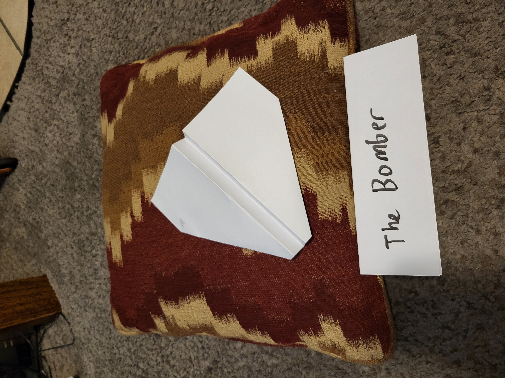
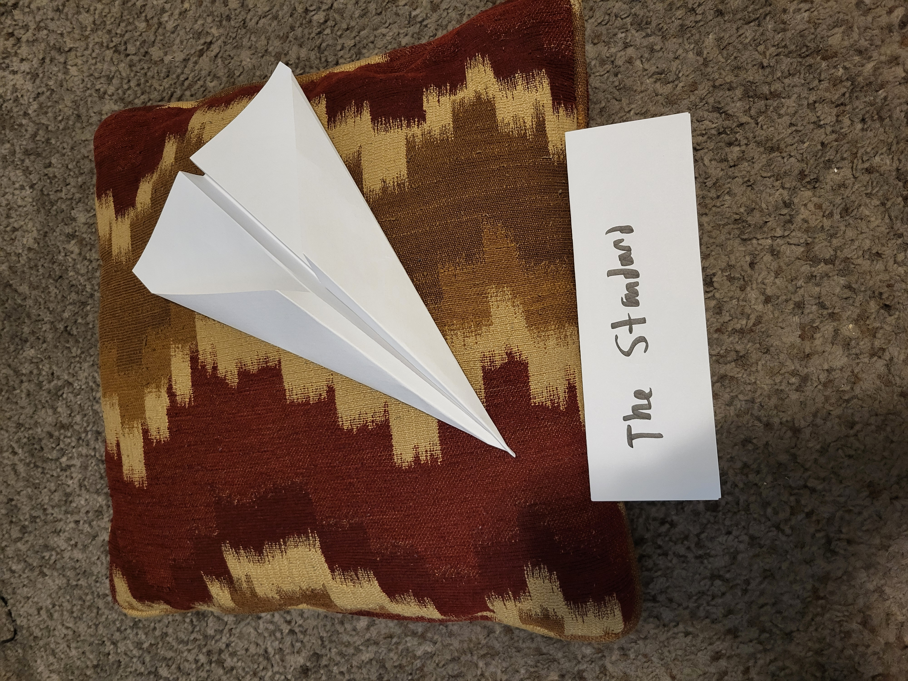
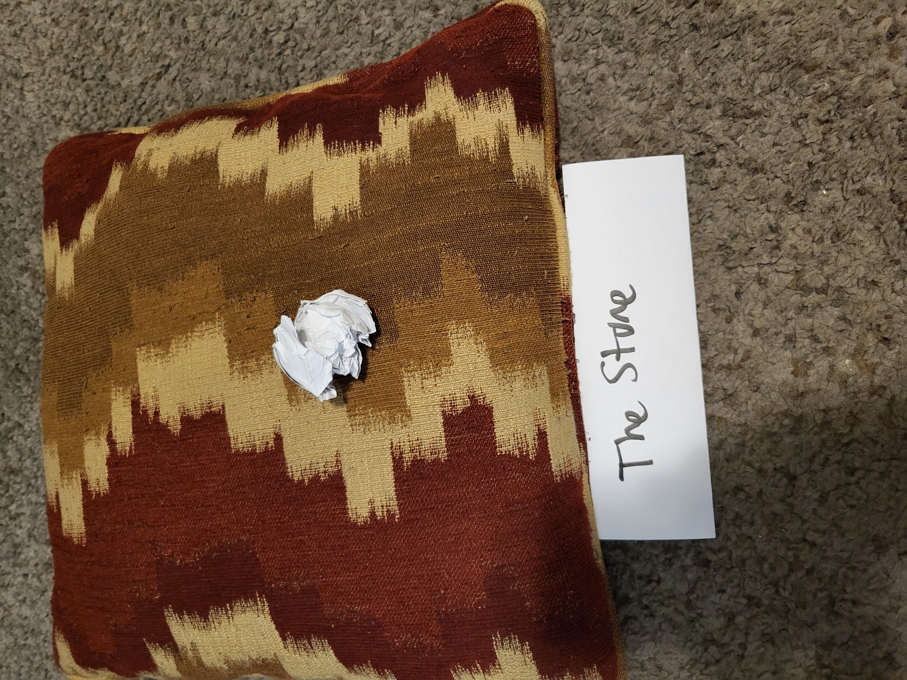

This study investigated whether paper airplane design, thrower, or the interaction between design and thrower influenced average throwing distance. A two-way ANOVA was conducted to evaluate these factors. The results showed no statistically significant differences in average throwing distance among the three airplane designs or among the different throwers. Additionally, there was no statistically significant interaction between airplane design and thrower, suggesting that the effect of airplane design on throwing distance did not significantly depend on who threw the plane. Therefore, we failed to reject the null hypotheses. Based on these results, there is insufficient statistical evidence to conclude that airplane design, thrower, or their combination affects average throwing distance.
Study Design
Design Overview
Objective: Determine which of three paper airplane designs (Bomber, Standard, Stone) go the farthest distance when thrown. Further divided by the skill of the thrower (Me and my Wife)
Population: 15 Paper Airplanes
Response Variable: Distance in feet
Treatment Factor: Folding Design / Thrower
Experimental Unit: Type of Design / Thrower
Observational Unit: Each Paper Airplane
Randomization
We have employed the following Randomizations:
Random Selection of Experimental Units: The sheets of paper used for the experiment were randomly selected from the available paper.
Random Assignment of Units to Treatment: The sheets of paper were randomly assigned to one of the three airplane designs: Bomber, Standard, or Stone. The order in which the planes were folded was also randomized.
Random Order of Experimental Runs: The order in which the completed airplanes were thrown was randomized. This helped prevent factors such as changes in throwing ability or fatigue from favoring one particular design.
Factors
Controlled - Varied
Airplane design
Thrower of teh airplanes
Controlled - Held Constant
Where the planes were thrown (The Hinkley Gym)
Type of Paper (A4 print paper)
Standing position
Folder of the airplanes (Me)
Not Controlled - Measured
None
Not Controlled - Not Measured
Ac cause air movement
Strength of the throw
Types of Planes
The Bomber

Bomber
The Bomber is a plane I made most commonly when I was a child. It is the coolest looking of the three
The Standard

Standard
This is a standard paper airplane that children first learn to make.
The Stone

Stone
This is the plane my dad used to win a paper airplane contest when I was a child. There is considerable discourse on whether or not this qualifies as a plane. I am on the side of the supporters.
Our Null Hypothesis states that the thrower of the plane has no effect on the distance thrown. I.E. that the \(\beta\) is 0 for both levels.
Our Alternative Hypothesis states that one thrower will have a different average distance when thrown than the others.
Data Collection
We collected our data by throwing the 15 paper airplanes in an empty gymnasium at the BYUI University as it was the most controlled environment available to us at the time. My wife threw her planes for an earlier experiment (Case Study 1). I threw his at a different time with the same randomizations and experiment structure. We measured how far each plane flew and recorded the data in feet.
Descriptive Stats
Code
favstats(dist ~ type | thrower, data=data) %>%pander()
thrower
min
Q1
median
Q3
max
mean
sd
n
missing
Bomber.Me
19
19.5
20
21
21.5
20.2
1.037
5
0
Standard.Me
10.5
16.5
19
19
20.5
17.1
3.959
5
0
Stone.Me
18
19.5
21.5
22
23.5
20.9
2.162
5
0
Bomber.My Wife
6
9.5
13.5
19
29
15.4
9.01
5
0
Standard.My Wife
8
17
18
21
21.5
17.1
5.436
5
0
Stone.My Wife
12.5
18
20.5
22
23
19.2
4.192
5
0
Me
10.5
19
19.5
21.25
23.5
19.4
3.007
15
0
My Wife
6
13
18
21.25
29
17.23
6.265
15
0
Code
ggplot(data, aes(x = type, y = dist, fill = thrower)) +geom_boxplot() +labs(title ="My Wife Has Consistently Wider Ranges",x ="Airplane Design",y ="Distance (feet)" ) +theme_minimal(base_size =14) +scale_fill_manual(values =c("firebrick","skyblue"))
This graph seems to indicate that there will be a significant interaction by the crossing of lines. To verify this we will need to run the ANOVA Model.
There is, to my surprise, no significance to either the interaction nor the variables. This means that neither the thrower nor the type of plane had an statistically significant effect on the distance flown.
Type of plane
Code
ggplot(data, aes(x = type, y = dist, color = type)) +geom_point() +stat_summary(fun = mean, geom ="point", size =4) +stat_summary(fun = mean, geom ="line", aes(group =1), linewidth =1) +stat_summary(fun.data = mean_cl_normal,geom ="errorbar",width =0.15,linewidth =0.8 ) +labs(title ="The average distance changes by airplane are not significant",x ="Airplane Design",y ="Mean Distance (feet)" ) +theme_minimal(base_size =14)
Thrower of plane
Code
ggplot(data, aes(x = thrower, y = dist, color = thrower)) +geom_point() +stat_summary(fun = mean, geom ="point", size =4) +stat_summary(fun = mean, geom ="line", aes(group =1), linewidth =1) +stat_summary(fun.data = mean_cl_normal,geom ="errorbar",width =0.15,linewidth =0.8 ) +labs(title ="The average distance changes by thrower are not significant",x ="Airplane Thrower",y ="Mean Distance (feet)" ) +theme_minimal(base_size =14)
Levene’s Test for Homogeneity of Variance (center = median)
Df
F value
Pr(>F)
group
2
0.7884
0.4648
27
NA
NA
Constant Variance Due to both the Levene’s Test and the Residual’s Vs Fitted plot This assumption is NOT violated
Normal Errors The QQplot shows that This assumption is NOT violated
Independent Observations The order plot, plus common sense tell us that This assumption is NOT violated
In summary NO ASSUMPTIONS WERE VIOLATED
Conclusion
In conclusion, the ANOVA results showed no statistically significant difference in average throwing distance among the three paper airplane designs nor among different throwers nor any significant interaction. Therefore, we failed to reject the null hypothesis.